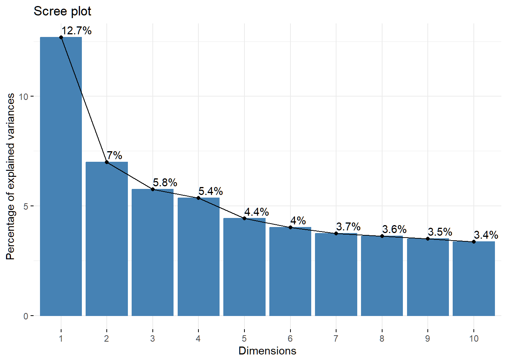
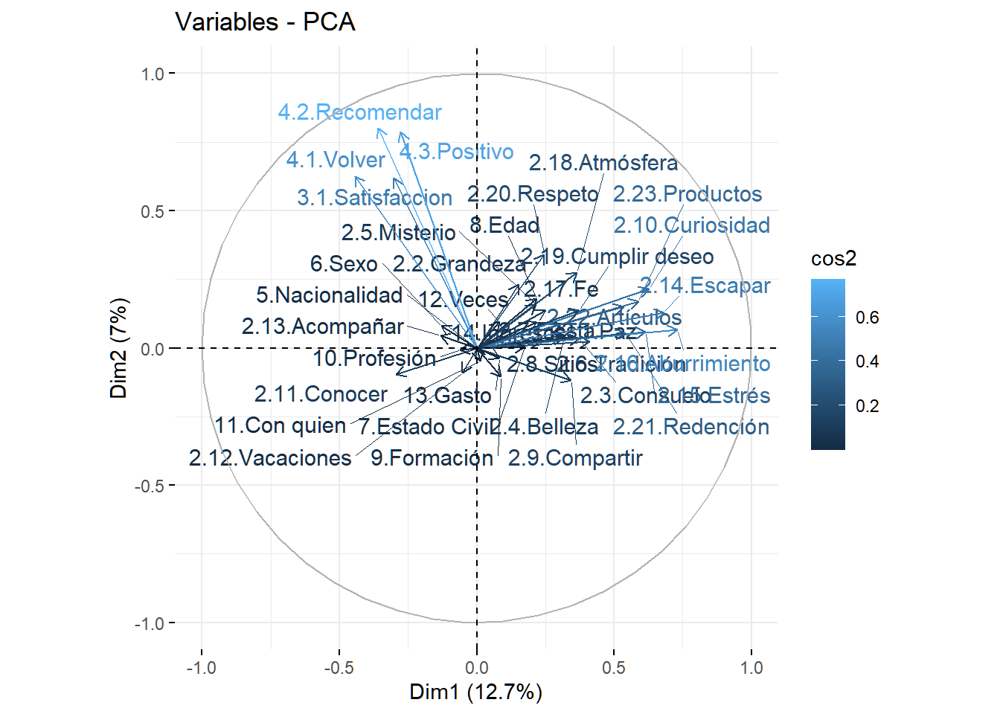

library(tidyverse)
library(readxl)
library(FactoMineR)
library(factoextra)
library(Factoshiny)Motivations Virgen de la Puerta
Principal Components Analysis - PCA
Load the data
otuzco <- read_csv2("data/Motivaciones_Virgen_de_Otuzco_short_UTF8.csv")Check the structure
str(otuzco)spc_tbl_ [384 × 38] (S3: spec_tbl_df/tbl_df/tbl/data.frame)
$ 1.1.Vive en Otuzco: num [1:384] 2 2 2 2 2 2 2 2 2 2 ...
$ 2.1.Paz : num [1:384] 5 4 5 4 5 4 5 4 4 3 ...
$ 2.2.Grandeza : num [1:384] 5 4 3 4 5 5 4 4 4 4 ...
$ 2.3.Consuelo : num [1:384] 5 3 5 3 3 5 4 4 5 3 ...
$ 2.4.Belleza : num [1:384] 4 5 5 5 5 5 5 4 3 4 ...
$ 2.5.Misterio : num [1:384] 5 4 4 4 4 5 5 4 3 2 ...
$ 2.6.Tradición : num [1:384] 5 3 3 3 4 4 4 3 5 4 ...
$ 2.7.Fiesta : num [1:384] 5 5 3 3 2 2 1 4 5 5 ...
$ 2.8.Sitios : num [1:384] 4 5 3 4 4 3 3 3 4 5 ...
$ 2.9.Compartir : num [1:384] 5 5 5 2 3 4 3 2 4 5 ...
$ 2.10.Curiosidad : num [1:384] 4 1 2 2 2 2 2 1 1 3 ...
$ 2.11.Conocer : num [1:384] 2 5 5 5 5 4 4 4 3 3 ...
$ 2.12.Vacaciones : num [1:384] 4 2 2 3 3 2 3 4 3 3 ...
$ 2.13.Acompañar : num [1:384] 5 5 5 5 5 5 5 5 5 5 ...
$ 2.14.Escapar : num [1:384] 5 1 2 2 1 3 3 3 3 2 ...
$ 2.15.Estrés : num [1:384] 5 1 2 2 1 3 3 3 3 2 ...
$ 2.16.Aburrimiento : num [1:384] 5 1 1 3 3 2 3 2 2 2 ...
$ 2.17.Fe : num [1:384] 5 4 5 5 5 5 5 3 3 4 ...
$ 2.18.Atmósfera : num [1:384] 5 4 4 4 4 4 4 4 4 5 ...
$ 2.19.Cumplir deseo: num [1:384] 5 3 2 2 4 3 3 3 4 5 ...
$ 2.20.Respeto : num [1:384] 5 5 5 4 4 5 4 4 4 NA ...
$ 2.21.Redención : num [1:384] 4 2 2 2 3 2 4 4 2 2 ...
$ 2.22.Artículos : num [1:384] 4 2 2 3 3 2 4 3 4 4 ...
$ 2.23.Productos : num [1:384] 4 2 2 3 3 2 4 3 4 4 ...
$ 3.1.Satisfaccion : num [1:384] 5 5 5 5 5 5 5 5 5 5 ...
$ 4.1.Volver : num [1:384] 3 5 5 5 5 5 5 5 5 5 ...
$ 4.2.Recomendar : num [1:384] 5 5 5 5 5 5 5 5 5 5 ...
$ 4.3.Positivo : num [1:384] 5 5 5 5 5 5 5 5 5 5 ...
$ 5.Nacionalidad : num [1:384] 1 1 1 1 1 1 1 1 1 1 ...
$ 6.Sexo : num [1:384] 2 1 1 2 2 2 1 1 2 2 ...
$ 7.Estado Civil : num [1:384] 2 3 1 3 1 3 1 1 1 1 ...
$ 8.Edad : num [1:384] 4 2 2 5 3 4 2 2 5 4 ...
$ 9.Formación : num [1:384] 2 2 2 1 3 1 1 2 2 1 ...
$ 10.Profesión : num [1:384] 8 8 8 8 8 8 8 8 8 8 ...
$ 11.Con quien : num [1:384] 2 4 2 2 3 2 2 2 4 2 ...
$ 12.Veces : num [1:384] 4 4 4 2 1 2 3 1 4 4 ...
$ 13.Gasto : num [1:384] 3 2 5 5 2 4 4 2 3 4 ...
$ 14.Ingresos : num [1:384] 1 1 2 2 2 2 2 2 2 2 ...
- attr(*, "spec")=
.. cols(
.. `1.1.Vive en Otuzco` = col_double(),
.. `2.1.Paz` = col_double(),
.. `2.2.Grandeza` = col_double(),
.. `2.3.Consuelo` = col_double(),
.. `2.4.Belleza` = col_double(),
.. `2.5.Misterio` = col_double(),
.. `2.6.Tradición` = col_double(),
.. `2.7.Fiesta` = col_double(),
.. `2.8.Sitios` = col_double(),
.. `2.9.Compartir` = col_double(),
.. `2.10.Curiosidad` = col_double(),
.. `2.11.Conocer` = col_double(),
.. `2.12.Vacaciones` = col_double(),
.. `2.13.Acompañar` = col_double(),
.. `2.14.Escapar` = col_double(),
.. `2.15.Estrés` = col_double(),
.. `2.16.Aburrimiento` = col_double(),
.. `2.17.Fe` = col_double(),
.. `2.18.Atmósfera` = col_double(),
.. `2.19.Cumplir deseo` = col_double(),
.. `2.20.Respeto` = col_double(),
.. `2.21.Redención` = col_double(),
.. `2.22.Artículos` = col_double(),
.. `2.23.Productos` = col_double(),
.. `3.1.Satisfaccion` = col_double(),
.. `4.1.Volver` = col_double(),
.. `4.2.Recomendar` = col_double(),
.. `4.3.Positivo` = col_double(),
.. `5.Nacionalidad` = col_double(),
.. `6.Sexo` = col_double(),
.. `7.Estado Civil` = col_double(),
.. `8.Edad` = col_double(),
.. `9.Formación` = col_double(),
.. `10.Profesión` = col_double(),
.. `11.Con quien` = col_double(),
.. `12.Veces` = col_double(),
.. `13.Gasto` = col_double(),
.. `14.Ingresos` = col_double()
.. )
- attr(*, "problems")=<externalptr> Create the data matrix
data_matrix <- otuzco[, 2:38]Run the PCA
pca_result <- PCA(data_matrix, graph = FALSE)Explore the results
1.Top 20 Eigenvalues
pca_result$eig[1:20,] eigenvalue percentage of variance cumulative percentage of variance
comp 1 4.6959546 12.691769 12.69177
comp 2 2.5868284 6.991428 19.68320
comp 3 2.1298669 5.756397 25.43959
comp 4 1.9845005 5.363515 30.80311
comp 5 1.6360541 4.421768 35.22488
comp 6 1.4870147 4.018959 39.24384
comp 7 1.3843212 3.741409 42.98524
comp 8 1.3425212 3.628436 46.61368
comp 9 1.2949029 3.499738 50.11342
comp 10 1.2440848 3.362391 53.47581
comp 11 1.1577800 3.129135 56.60494
comp 12 1.0851192 2.932755 59.53770
comp 13 1.0081327 2.724683 62.26238
comp 14 1.0000000 2.702703 64.96508
comp 15 0.9759827 2.637791 67.60288
comp 16 0.9196399 2.485513 70.08839
comp 17 0.9051154 2.446258 72.53465
comp 18 0.8520835 2.302928 74.83758
comp 19 0.8150384 2.202806 77.04038
comp 20 0.7702567 2.081775 79.122162. Top 20 Variables
pca_result$var$coord[1:20, ] Dim.1 Dim.2 Dim.3 Dim.4
2.1.Paz 0.30758931 0.08765958 -0.086907723 0.109036605
2.2.Grandeza 0.15276481 0.23248401 0.105980942 0.034273775
2.3.Consuelo 0.37232160 0.03281033 -0.361527948 -0.118733145
2.4.Belleza 0.31630603 0.03556683 0.008740093 0.166749053
2.5.Misterio 0.21450155 0.15896249 0.090031902 0.326793765
2.6.Tradición 0.41143468 0.02458183 0.024753658 0.328491058
2.7.Fiesta 0.31141553 0.04463974 0.007556800 0.275067804
2.8.Sitios 0.22859128 0.02165627 0.187796520 0.577097819
2.9.Compartir 0.34351821 -0.11886030 -0.040789829 0.252141985
2.10.Curiosidad 0.62691023 0.21691708 0.049175900 0.293659979
2.11.Conocer -0.29284506 -0.09698949 0.037072975 0.108133847
2.12.Vacaciones -0.05192667 -0.09048804 0.248474868 0.265808333
2.13.Acompañar -0.13277834 0.04440824 -0.060240442 -0.020897848
2.14.Escapar 0.68223642 0.12988966 -0.090748932 0.003690195
2.15.Estrés 0.61413739 0.05913762 -0.080084431 -0.011747679
2.16.Aburrimiento 0.73042861 0.06701899 0.016906234 0.152706444
2.17.Fe 0.24993582 0.13702658 -0.034849257 0.220415055
2.18.Atmósfera 0.36548864 0.27461660 0.085038094 0.111055855
2.19.Cumplir deseo 0.37251772 0.13736991 -0.018442958 -0.106620469
2.20.Respeto 0.24569359 0.34143574 -0.329088393 -0.023783737
Dim.5
2.1.Paz -0.002532281
2.2.Grandeza 0.071211042
2.3.Consuelo 0.071935877
2.4.Belleza -0.105120062
2.5.Misterio 0.115422497
2.6.Tradición -0.097135753
2.7.Fiesta -0.098193602
2.8.Sitios 0.068993381
2.9.Compartir 0.059814627
2.10.Curiosidad 0.136562465
2.11.Conocer -0.043654740
2.12.Vacaciones -0.014076509
2.13.Acompañar -0.152507687
2.14.Escapar 0.119403228
2.15.Estrés -0.033913121
2.16.Aburrimiento 0.036723623
2.17.Fe 0.045752392
2.18.Atmósfera -0.174518998
2.19.Cumplir deseo -0.221215699
2.20.Respeto -0.1657615603. Top 20 individuals
pca_result$ind$coord[1:20,] Dim.1 Dim.2 Dim.3 Dim.4 Dim.5
1 5.2749884 -0.009015246 1.1115307 1.67693408 -1.89225373
2 -3.1558167 -0.728905552 0.6187140 1.92580077 -0.28930452
3 -2.4422930 -0.594101121 -0.3463116 0.96549332 0.44849996
4 -2.2365839 -0.109102463 3.1424858 -0.01200255 -1.07845819
5 -2.0883166 -0.205585705 -0.2664967 1.29174421 -1.24566140
6 -1.2079193 0.509078596 1.3983151 0.58767412 -0.97550236
7 -0.3323454 0.165379953 0.5566438 -0.20205281 -0.91234615
8 -2.1525223 -0.681834463 -0.4390382 -0.01652958 -1.44253094
9 -0.6503402 -0.064993035 0.4588534 -0.57140779 -0.51483395
10 -0.6067234 0.540695827 1.9360497 0.37572051 -1.97648691
11 -2.7268784 -1.168663162 2.2990109 0.67482182 0.01900405
12 -1.2662283 -0.593640639 0.2549031 2.02759380 -0.90263374
13 -1.2727942 -0.330535370 -0.5133801 1.64633512 -1.44062816
14 -1.9535079 -0.141197686 1.3938482 2.33398449 -2.05666123
15 -2.8160880 -0.250318171 2.4972700 0.88643609 -0.10095567
16 0.3467717 0.347875181 1.8070798 1.40874913 0.23676956
17 -1.4017719 -2.533999012 -0.7065582 4.13964547 -0.05361021
18 -1.6587118 -0.100489742 2.4795867 1.87778788 0.25603883
19 -0.2314642 1.297334505 2.3908462 0.19071184 -1.61970748
20 1.5734214 1.104445049 -0.8159041 -2.95610456 -0.61023418Scree plot (Contributions graph)
fviz_eig(pca_result, addlabels = TRUE)
Visualize individuals and variables on the first two principal components
fviz_pca_ind(pca_result, col.ind = "cos2", col.var = "contrib", repel = TRUE)Correlation circle
fviz_pca_var(pca_result, col.var = "cos2", repel = TRUE)